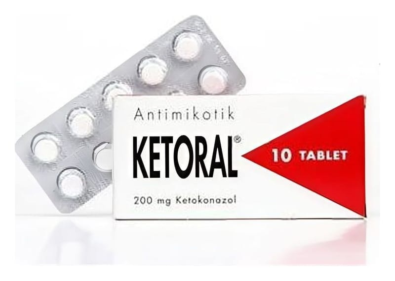

Ketoral 200 mg Tablet, 10 Adet

Ne için kullanılır
KT · Bölüm 1KETORAL tablet beyaz, üst yüzü çentikli yuvarlak tabletler şeklindedir.
KETORAL tablet, 10 ve 30 tablet içeren blister ambalajlarda piyasaya sunulmaktadır.
KETORAL’in etkin maddesi olan ketokonazol, imidazol türevi sistemik antimikotikler adı verilen bir ilaç grubuna aittir.
Ketokonazol mantar hücresi duvarının yapısını bozarak, mantar hücresinin ölümüne yol açar.
Mantarlar, içinde yaşadığımız çevrede yaygın olarak bulunan mikroorganizmalardır. Vücut yüzeyine veya iç organlara yerleşerek çok değişik türlerde mantar enfeksiyonlarına yol açarlar. Oluşan enfeksiyon hastalığının belirtileri, bulunan bölgeye ya da organa göre değişebilmektedir.
KETORAL, cilt mantarı ve maya (örn. Candida) da dahil olmak üzere mantardan kaynaklanan enfeksiyonların tedavisine yönelik bir ilaçtır.
Ketakonazolün merkezi sinir sistemine geçişi iyi olmadığından fungal menenjit tedavisinde ağız yolundan ketokonazol kullanılmamalıdır.